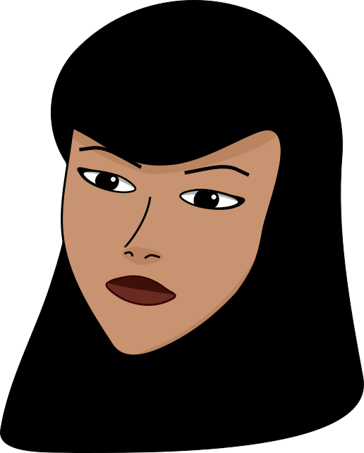
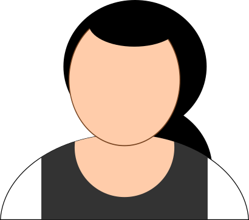

Information sur IUT Lyon 1
L'ecole
L’IUT Lyon 1 est l’institut universitaire de technologie de l’université Claude Bernard Lyon 1 ; il propose des formations de niveau bachelor (BUT et LP) dans les domaines des sciences et de la technologie, réparties sur trois campus situés à Villeurbanne et à Bourg-en-Bresse.
Les programmes
BUT
Le BUT est un diplôme de 3 ans qui offre une formation professionnalisante dans divers domaines technologiques.
LICENCE PRO
Les LP sont des formations universitaires de niveau bac+3, spécialisées et axées sur la professionnalisation.
Membres de la classe
-

Charlotte -
Lyonel -
Ilian -
Yaél -

Dominique